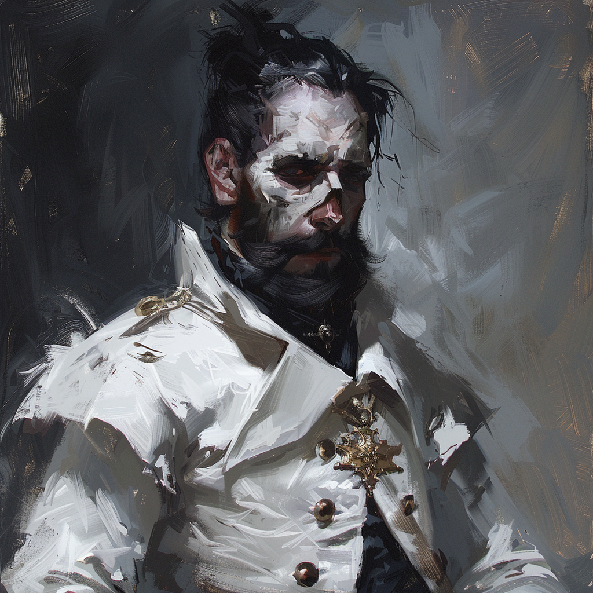

|  |
Sieur Damian HargroveDamian Hargrove servait comme ingénieur en chef de l'Ordre du Dragon d'Argent. Il a trouvé la mort au combat lors de la bataille de Balinok. Avant de disparaître, Damian avait un souhait inaccompli : déclarer son amour et demander en mariage Amalthea, la femme de sa vie, qui était en poste à la forteresse de Tsolenka lors de l'attaque de Strahd sur l'ordre. Il est possible que son corps y repose encore. Il nous a confié la bague qu'il avait forgé pour elle. Damian avait personnalisé son armure en y forgeant des fleurs sur le plastron, un symbole de son amour et de sa finesse en tant qu'artisan. |